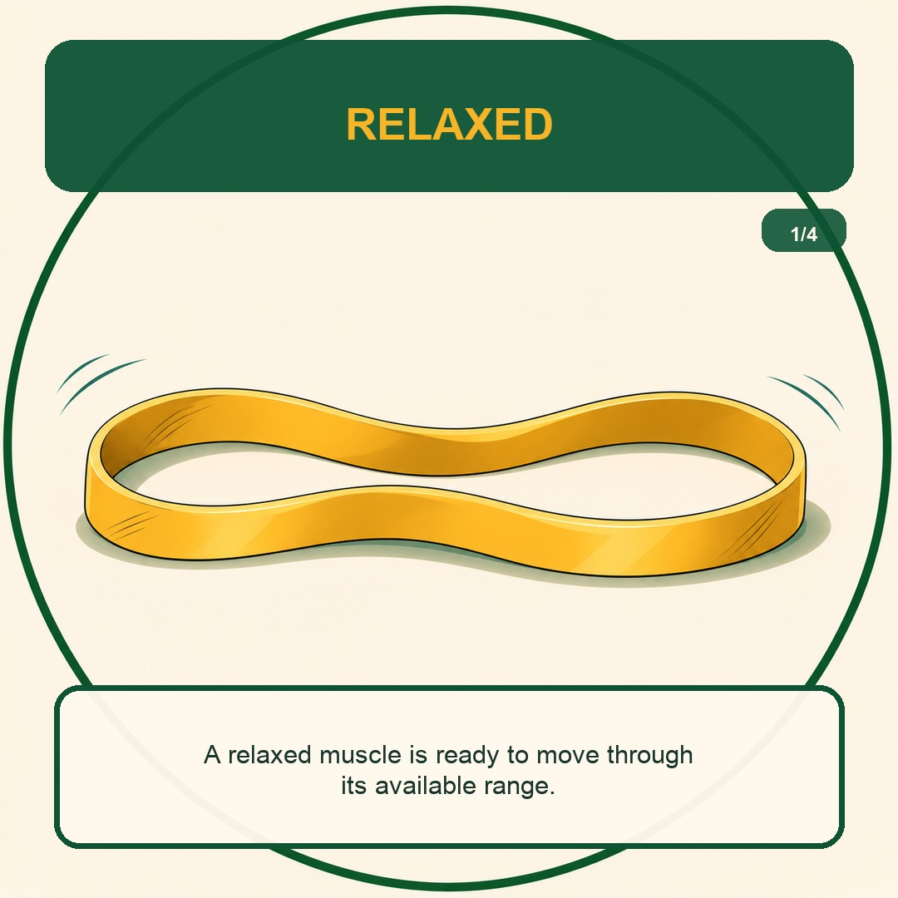
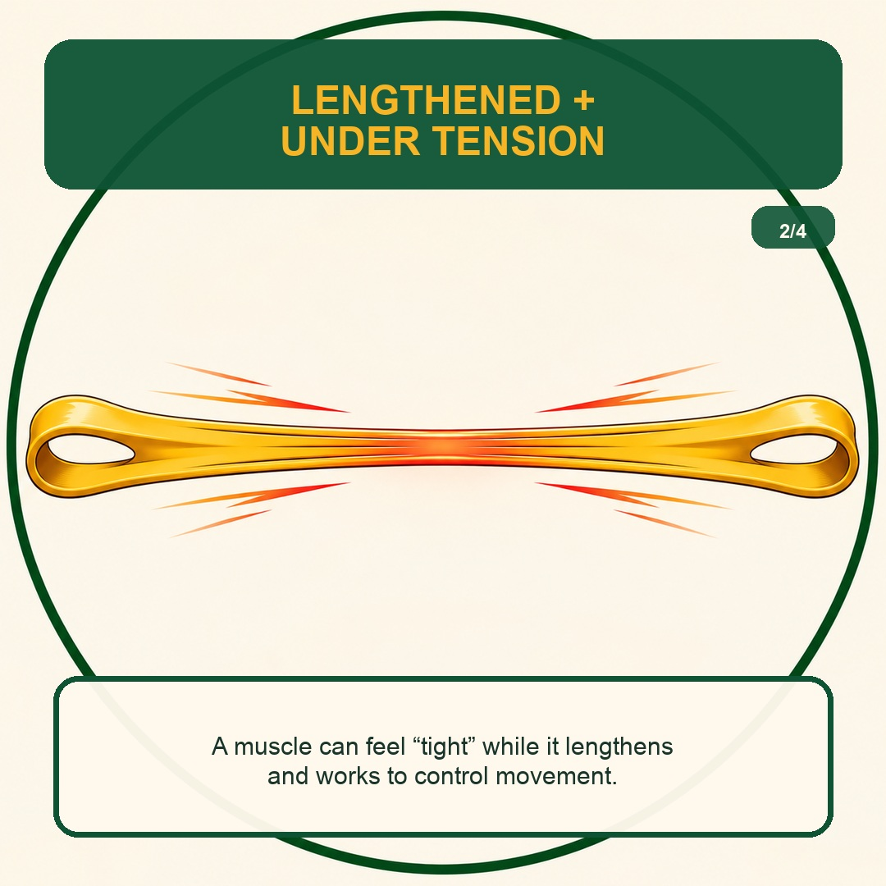
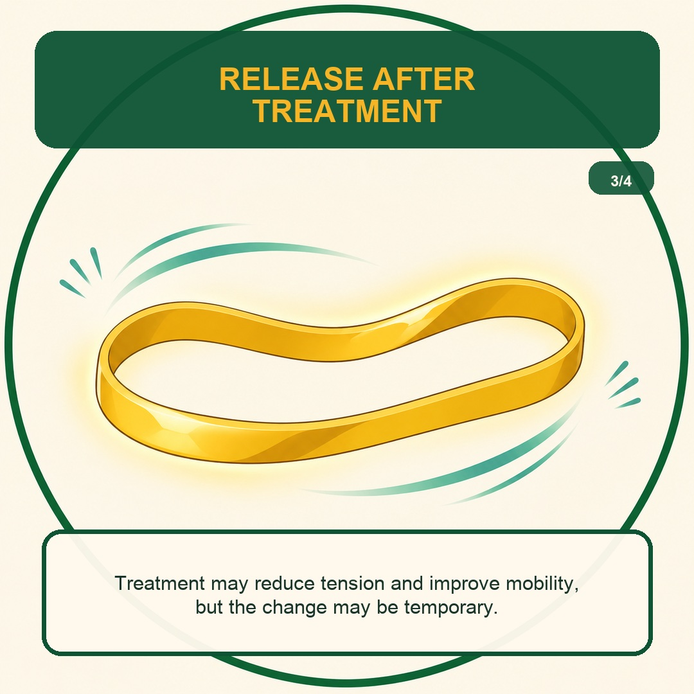
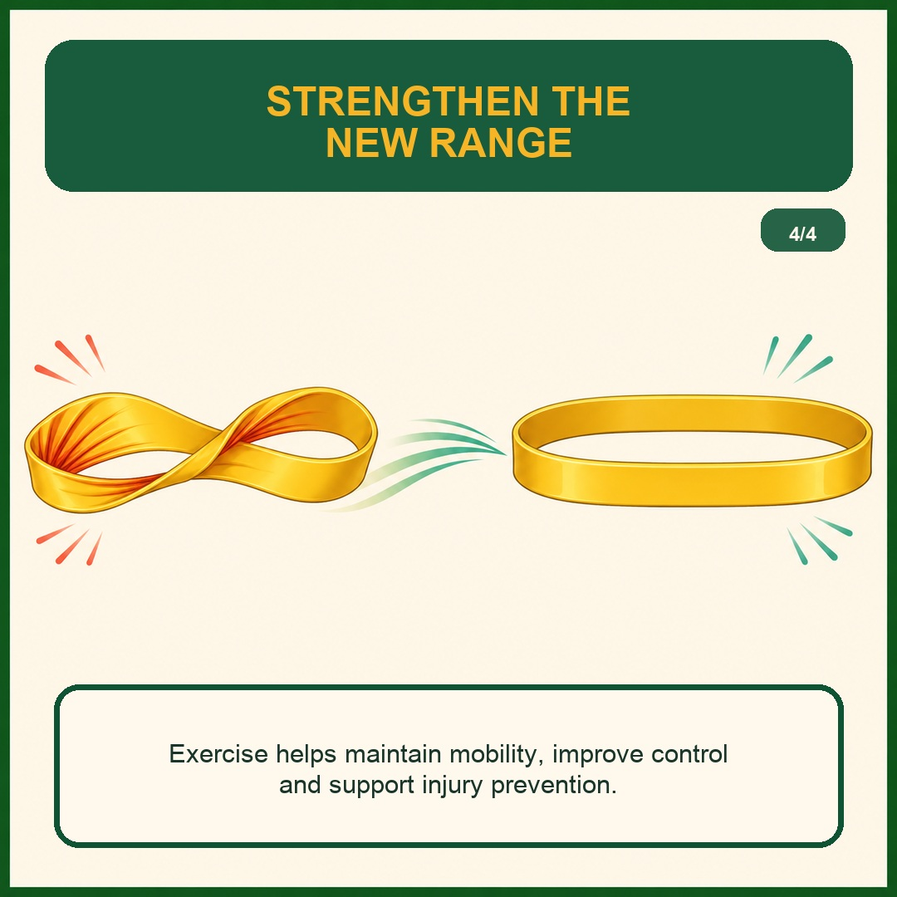

Why does a muscle feel tight?
A simple rubber-band analogy can show how a muscle may feel tight while lengthening under tension, why release after treatment may be temporary, and how strengthening can help maintain mobility.
Tightness is a feeling—not a complete diagnosis.
People often describe a muscle as “tight” when movement feels restricted, uncomfortable, overworked, or guarded. A muscle can also feel tight while it lengthens and works to control movement under tension. The sensation does not automatically mean the muscle has physically shortened.
The rubber band is a simple visual analogy. Muscles are living tissue and do not behave exactly like rubber bands, but the comparison helps illustrate the progression from tension, to temporary release after treatment, to strengthening the available range.




Relief matters.
So does the reason it returns.
A recurring sensation of tightness does not have one universal cause. The appropriate approach depends on your history, symptoms, movement, mobility and examination findings.
A muscle may feel tight while it lengthens under load and works to control the movement.
Treatment and appropriate mobility work may reduce tension and improve movement, but the change may be temporary.
Exercise helps maintain mobility, improve control and support injury prevention.
Related patient resources
An evaluation can help clarify what your body needs.
Contact VAL Chiropractic in San Jose to ask a question or request an appointment with Dr. Lam Nguyen.
This page provides general educational information and is not a diagnosis or a substitute for an individual medical examination. Seek prompt medical attention for severe pain, progressive weakness, numbness, loss of coordination, bowel or bladder changes, fever, or symptoms following significant trauma.